Хоча залежності є потужною стороною операцій, є ще одна особливість, яка недоступна для Grand Central Dispatch, а саме, ви можете скасувати запущену операцію, якщо вона написана правильно. Це дуже корисно для тривалих операцій, які з часом можуть стати неактуальними. Наприклад, користувач може перейти на інший екран або прокрутити таблицю. Немає сенсу продовжувати завантажувати дані або робити складні обчислення, якщо користувач не збирається бачити результат.
Магія скасування
Після того, як ви додасте операцію в чергу операцій, ви більше не зможете її контролювати. З цього моменту черга буде планувати і керувати операцією. Єдине, що ви зможете зробити - це викликати метод скасування операції.
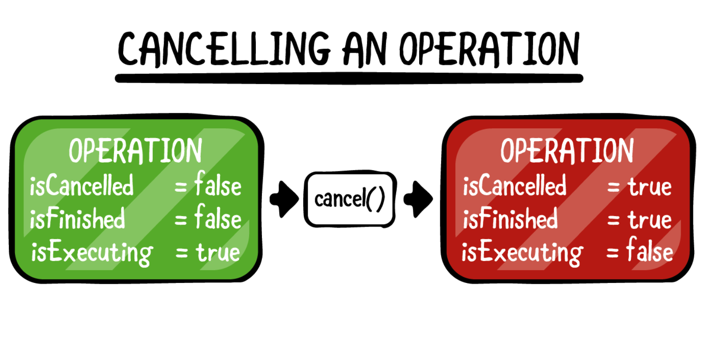Якщо ви відправляєте запит на зупинку операції, властивість isCancelled поверне true. Спочатку може здатися дивним, що iOS не зупиняє операцію автоматично, але насправді це не так.
Що означає скасування операції для ОС?
- Чи повинна операція просто викликати помилку?
- Чи потрібна очистка пам’яті?
- Чи можна скасувати поточний мережевий виклик?
- Чи є можливість дати ще комусь знати на стороні сервера, що завдання зупинене?
- Чи будуть дані пошкоджені, якщо операція зупиниться?
За допомогою невеликого списку проблем, представлених в пунктах вище, ви можете зрозуміти, чому установка властивості, що ідентифікує запит скасування - це все, що можливо автоматично. Реалізація запуску операції за замовчуванням спочатку перевіряє, чи встановлений прапорець isCancelled, і негайно завершує роботу, якщо це так.
Скасування та cancelAllOperations
Інтерфейс для скасування операції досить простий. Якщо ви просто хочете скасувати певну операцію, ви можете викликати метод скасування. Якщо, з іншого боку, ви хочете скасувати всі операції, які знаходяться в черзі операцій, вам слід викликати метод cancelAllOperations, визначений у OperationQueue.
Оновлення AsyncOperation
У цьому розділі ви зміните додаток, над яким працювали, щоб операції скасовувалися, коли користувач прокручує відповідну cell. У розділі 8 «Асинхронні операції» ви створили базовий клас AsyncOperation. Якщо ви пам'ятаєте, в цьому коді була замітка про те, що надана реалізація не була повністю завершена. Пора це виправити! Наданий клас виглядав приблизно так:
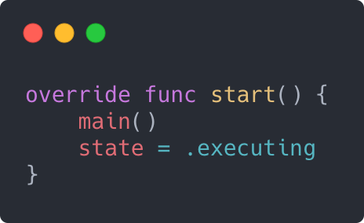Якщо ви збираєтеся дозволити скасування вашої операції - що ви завжди повинні робити, якщо у вас немає вагомої причини не робити цього - тоді вам необхідно перевірити змінну isCancelled у відповідних місцях. Відкрийте прикріплений до цього розділу проект і відкрийте AsyncOperation.swift, щоб змінити метод start:
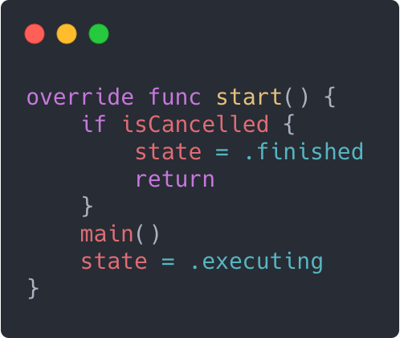А потім перевизначите метод cancel:
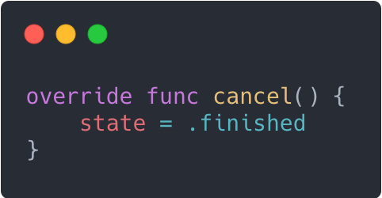Ви, ймовірно, думаєте: «Але скасування вже є частиною базового класу», і матимете рацію. Однак базовий клас нічого не знає про стани, які ви визначили, і тому вам необхідно оновити відповідну властивість.
Важливо, щоб при скасуванні операції властивість isExecuting ставала false, а властивість isFinished стала true. Ваш базовий клас тепер обробляє ці вимоги, відповідним чином оцінюючи властивість state.
Після вищевказаних змін з’являється можливість скасовувати операцію до її початку.
Скасування запущеної операції
Відкрийте NetworkImageOperation.swift і в main, додайте новий оператор guard відразу після defer:
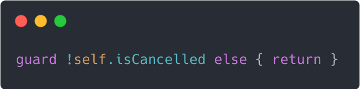Потім додайте спосіб скасування мережевого запиту під час його виконання. Спочатку додайте в клас нову властивість:
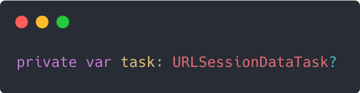Далі в main замініть рядок, де ви створюєте завдання з даними, наступним кодом:
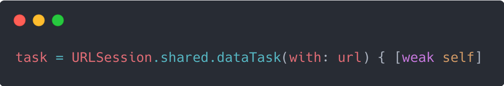Потім видаліть виклик resume в кінці цього блоку. Замість цього виконайте виклик resume в завданні, додавши наступне в кінці main:
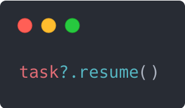Нарешті, вам потрібно перевизначити cancel, щоб переконатися, що завдання скасоване. Додайте в клас наступний метод:
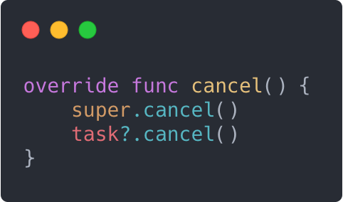Тепер скачування можна скасувати в будь-який момент.
Пора дозволити скасування в TiltShiftOperation.swift. Можливо, ви захочете розмістити дві перевірки в основному методі. Безпосередньо перед установкою змінної fromRect зробіть першу перевірку:
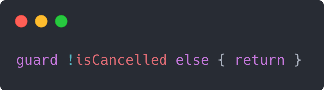Потім, безпосередньо перед установкою outputImage, знову додайте ту ж перевірку.
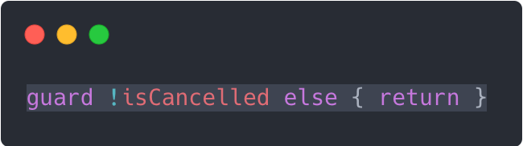Тепер, коли у вас є спосіб скасувати операцію, прийшов час застосувати його і до таблички, щоб операції для cell скасовувалися, коли користувач їх прокручує.
Відкрийте TiltShiftTableViewController.swift і додайте в клас наступну властивість:
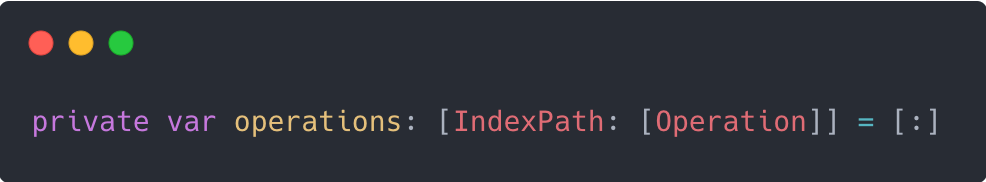Це словник, в якому будуть зберігатися операції для конкретної cell (як завантаження, так і tilt shifting). Вам потрібно зберігати операції, щоб була можливість їх скасування.
Додайте наступні рядки в tableView(_: cellForRowAt :) прямо перед return cell, щоб зберегти операції:
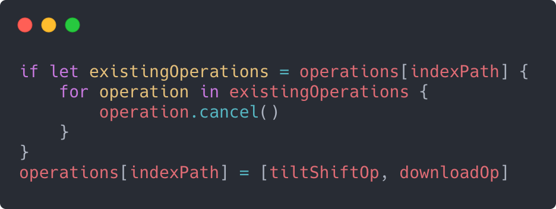Якщо операція для цього index path вже існує, скасуйте її і збережіть нову операцію для цього index path.
Потім додайте в кінець класу наступний метод:
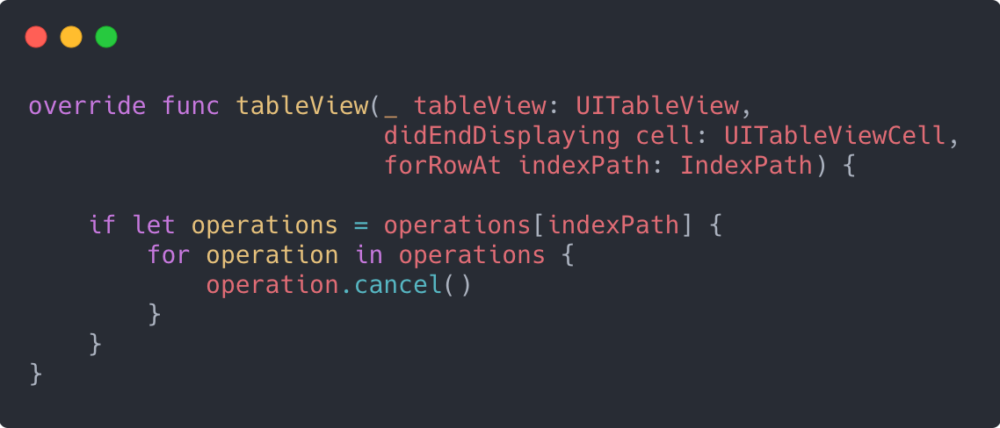Це реалізує метод делегата таблиці, який викликається, коли cell виходить за межі екрану. На цьому етапі ви скасуєте операції для цієї cell, переконавшись, що ресурси телефону використовуються тільки для видимих cell.
Зберіть і запустіть додаток.
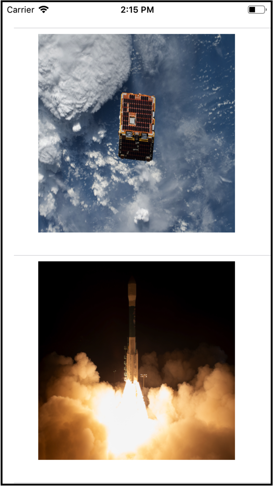Ви, ймовірно, не помітите великої різниці, але тепер, коли ви швидко прокручуєте таблицю, додаток не завантажує і не фільтрує зображення для кожної cell, яка швидко проходить екраном. Завантаження тих, які вийшли за межі екрану, скасовуються, що економить мережевий трафік користувача і час автономної роботи, а також прискорює роботу вашого додатку.
Який наступний крок?
Необхідність скасувати операцію не обов'язково означає, що сталося щось погане. Іноді варто скасувати операцію, тому що в ній більше немає необхідності. Якщо ви працюєте з UITableView або UICollectionView, ви можете реалізувати методи делегата попередньої вибірки, представлені в iOS 10. Коли контролер збирається виконувати попередню вибірку, ви повинні створити операції. Якщо контролер скасовує попередню вибірку, ви також скасовуєте операції.